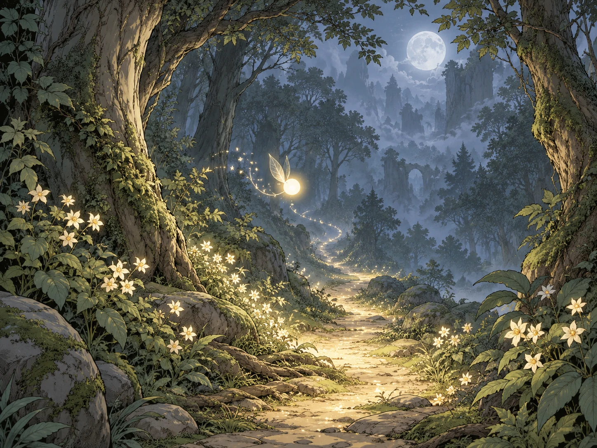
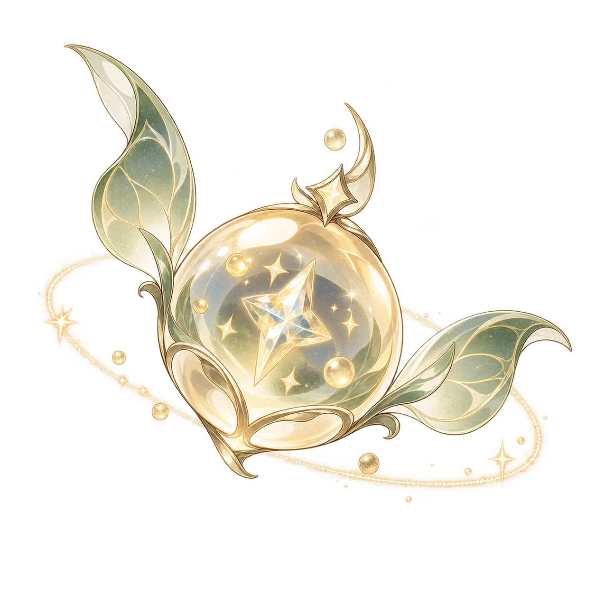
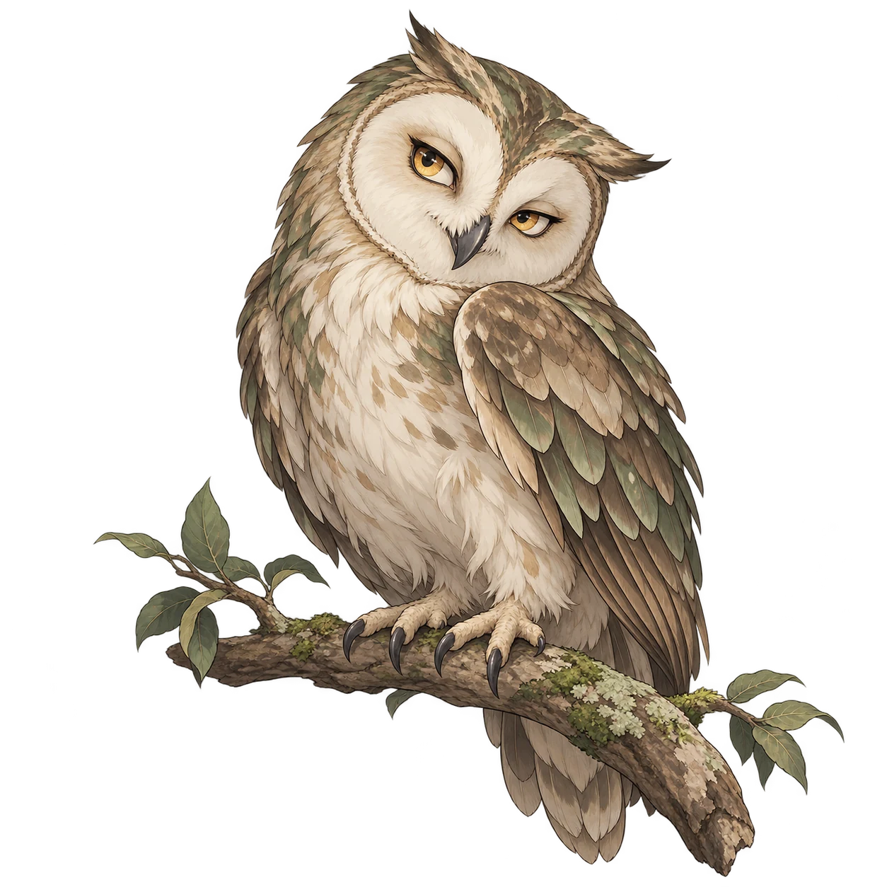
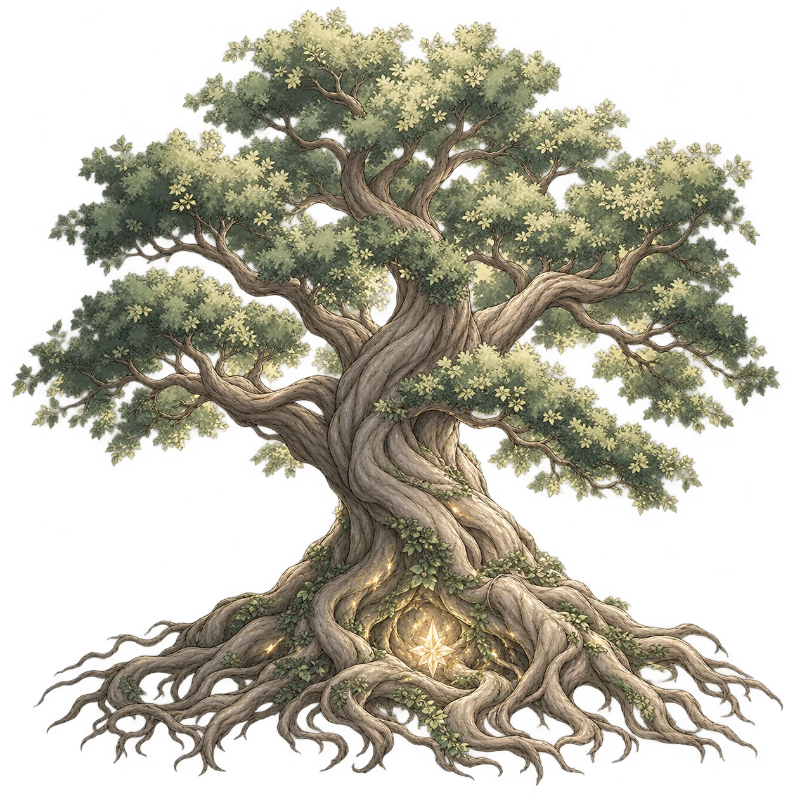

序章 · 01 / 04
曾經的星光森林
點擊插圖或「繼續故事」，逐幕走進森林。
序章 · 01 / 04
點擊插圖或「繼續故事」，逐幕走進森林。

WELCOME, ADVENTURER
穿過星隕之谷、拜訪貓頭鷹賢者，最後接受古樹的靈魂拷問，找回三塊星光碎片。
同一裝置會記住登入狀態。請使用暱稱。
ADVENTURE MAP
三處微光，三塊失落的碎片。自由選擇地點，聽聽守護者的話，再展開試煉。

彈珠精靈
貓頭鷹賢者
古樹長老向後拖曳、放開發射，享受角落反彈與連擊！每顆彈珠會在 5 秒後返回，也可以手動召回。完成三次彈射，凝聚星光碎片！
拉住下方的星光彈珠，放開發射！
向貓頭鷹賢者提問，猜出牠心裡的秘密詞語。
小心，貓頭鷹可能故意說你的答案不是答案。有答案時，就大膽提交試試吧！
THE ANCIENT TREE
沒有對錯，古樹只是對你有點意見。
你的選擇將改變冒險紀念卡上的服裝、配件與神秘象徵。
森林將為你編織一張專屬紀念卡，每位冒險者可生成一次。
正在與森林建立連線…